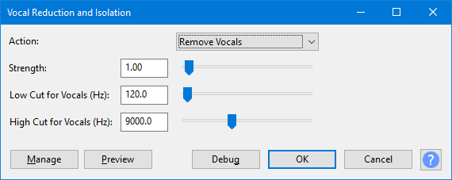

Vocal Reduction and Isolation
The Isolate options all return (dual) mono output. The narrowness of the center slice can be adjusted with the "Strength" slider. Center isolation is not possible using the classic subtraction method.
The Analyze option displays the amount of correlation between the stereo channels and the degree of likelihood that center removal or isolation will work effectively.
- See also the tutorial on Vocal Removal and Isolation
- Accessed by:
- 
{kind=link}
Action
- Remove Vocals: (default). If the audio is center-panned, removes the vocal range defined by the Low Cut and High Cut sliders, and returns it as a stereo track. Audio is said to be "center-panned" if it is common to both left and right channels.
- Isolate Vocals: If the audio is center-panned, extracts the slider-defined vocal range and returns it as a (dual) mono track.
- Isolate Vocals and Invert: If the audio is center-panned, extracts the slider-defined vocal range and returns it as an inverted (dual) mono track.
- The "and Invert" options may be useful when processing using duplicated tracks. See the examples below.
- Remove Center: Removes all audio (the whole frequency spectrum) that is common to both left and right channels and returns a true stereo track.
- Isolate Center: If the audio is center-panned, extracts the whole frequency spectrum and returns it as a (dual) mono track.
- Isolate Center and Invert: If the audio is center-panned, extracts the whole frequency spectrum from and returns it as an inverted (dual) mono track.
- Remove Center Classic: (Mono): Removes all audio (the whole frequency spectrum) that is common to both left and right channels and returns a (dual) mono track. This is identical to full frequency removal in the legacy Vocal Remover effect.
- The "Strength", "Low Cut" and "High Cut" sliders have no effect when "Remove Center Classic: (Mono)" is selected.
- Analyze: Tells you how great the chances are of a successful vocal reduction or isolation. It returns also the average Pan position for the selected audio. See below for an in-depth explanation.
Strength
The shape of the center is not a thin band but rather like a tent with a pole in the middle. This means that there will always audio from other pan positions included. The Strength slider modifies the shape of the center. Higher values increase the degree of reduction or isolation. Zero is off (no reduction or isolation). This slider has no effect with the "Remove Center Classic: (Mono)" choice.
Remove
- Less than 1.0: Produces a notch with a V shape like a ship's keel, but also with a sharp point. Use this setting to preserve some amount of the center.
- 1.0 - the default: Produces a notch with a V shape. The power distribution is preserved. This is the ideal setting for most cases.
- Greater than 1.0: Produces a notch with a U shape. This removes some audio adjacent to the center, as well as the center. Note that this will not remove stereo reverberation since it is distributed over the entire pan width.
Isolate
- Less than 1.0: Produces a peak like a U shape upside down, similar to an arch. Only extreme left and right are eliminated.
- 1.0 - the default: Produces a peak like a V shape upside down. The power distribution is preserved. You might want a higher value when a lot of side audio leaks in. This is also the recommended setting when working with two tracks (options with ...and Invert).
- Greater than 1.0: Produces a peak with an A shape like the Eiffel Tower (with a sharp point). This will attenuate most of the side energy but might produce artifacts or musical noise. Normalize the audio after using Isolate with a high strength setting.
Low Cut for Vocals
All actions with Vocals in the name use this value. The frequencies below will either not be removed or not be included in the isolated audio. It is useful to exclude bass and kick drum. The default value of 120 Hz is good for most lead vocals, or even low male voices. You can enter a higher value around 170 Hz for female voices and about 230 Hz for those of children.
High Cut for Vocals
All actions with Vocals in the name use this value. The frequencies above will either not be removed or not be included in the isolated audio. It is useful to exclude high sounds like bells, cymbals or Hi-hat. Note that human sounds like S or Z can also be very high in frequency - 5000 to 8000 Hz, so listen carefully to the preview.
Buttons
Clicking on the command buttons give the following results:
- gives a dropdown menu enabling you to manage presets for the tool and to see some detail about the tool. For details see Manage presets.
- plays a short preview of what the audio would sound like if the effect is applied with the current settings, without making actual changes to the audio. The length of preview is determined by your setting in , the default setting is 6 seconds.
- applies the effect to the selected audio with the current effect settings.
- aborts the effect and leaves the audio unchanged.
- brings you to the appropriate page in the Manual, this page.
Interpreting the analysis results
It is recommended to analyze the audio prior to actual processing of the effect. Analysis is very fast compared to the time needed for processing.
The two important values are:
- Pan Position: This gives the average pan position for the whole selected audio. The value of the track pan slider is not included in this calculation.
- Correlation: This is a measure for the similarity of the two channels. Values of +/-100 mean that the channels are exactly the same, even if one is inverted. A value of 0 means no relationship. It is fruitless to attempt removal or isolation in these cases. The ideal value is normally around +50. Values below 0 are rare and indicate that the stereo width is more than 100%. Inverting one channel makes the correlation positive.
- The correlation should be fairly high (around 100) which would indicate that there is indeed only the voice.
- Copy the value for the Pan Position. Double-click in the Pan slider to open the adjustment dialog then paste in the value with reversed sign (that is, put a minus sign in front of a positive value and a positive sign in front of a negative value).
- Mix and render the track. The voice will now be exactly centered and you can remove or isolate it.
- Don't forget to readjust the selection.
Limitations
- The input must be a true stereo track and not mere (dual) mono.
- Stereo Reverberation will not be fully removed because it is independently distributed over the whole stereo image.
- Naturally the plug-in does not know what kind of audio is in the center. All is removed or isolated equally, whether vocals, bass or solo instruments.
- This effect is quite slow, except for the "Remove Center Classic: (Mono)" and "Analyze" actions.
| The whole processing is done in memory. Long selections (over half an hour) might therefore cause Audacity to crash. |
Examples
- Creating a Karaoke version from an original song
- Choose Remove Vocals if you want to keep some bass and drum beat.
- Creating an acapella version from an original song
- Choose Isolate Vocals with a high Strength value. The result will probably still have some music in it. It is therefore better suited for a remix with a different accompaniment. Pure vocal versions have to be post-processed with other tools.
- Alternative to "Auto Duck" with podcasts
- Duplicate the track and choose Isolate Center and Invert on the second track. Record your voice. Silence the second track where you don't speak and the original music should be heard. On the same track, make fades at the boundaries (where the speech starts or stops).
- Removing excessive stereo reverb from a vocal or instrument track.
- Use Isolate... to make a single vocal or instrument track "dry" again.
- Removing random system noise from a two channel recording of a mono source.
- use Isolate... to remove random noise produced by the soundcard, the cables or the computer itself.
- Removing single words or phrases
- You can remove offending content from a song or movie dialog by selecting it and choosing Remove Vocals. Mask it with other sounds, if necessary.
- Amplifying dialogs in a movie.
- Duplicate the track, isolate the vocals and adjust the gain.
- Converting stereo files into 3.1, 5.1 and other multi-channel formats.
- Duplicate the track and choose "Isolate Center and Invert" on the second track. Render all to a new track. Delete the first track, invert the second track and split the third track. Rearrange the tracks accordingly. Thus you end up with "Front Left", "Center" and "Front Right" eventually.
- Extracting instrument solos
- Isolate the center if the solo is there, otherwise remove the center, split to mono and delete the superfluous track.
- Blending between original, karaoke version and vocals only
- Duplicate the track and choose Isolate Vocals and Invert on the second track. Choose the envelope tool or fade effects to gradually change from one mode to the other. Silencing the first track results in the vocals being isolated. Silencing the second track produces the original audio. Playing both tracks together removes the vocals.
- Correcting the pan position
- Analyze the whole track and copy the value for the pan position. Paste the value into the pan dialog and reverse the sign, that is, set a minus sign in front of positive values and vice-versa.
- Measuring similarity between two mono tracks
- Make the two tracks stereo and choose Analyze. The correlation value is the measure for the similarity in percent.
- Applying a brick wall filter to mono tracks
- Duplicate a mono track, make it stereo and choose Isolate Vocals for band pass and Remove Vocals for band stop filtering. Adjust the frequencies accordingly.